The Perl/Tk extension to Perl is the work of Nick Ing-Simmons nik@tiuk.ti.com whose copyright notice appears in the Tk-b11.01/COPYING file as follows:
Copyright (c) 1995 Nick Ing-Simmons. All rights reserved. This package is free software; you can redistribute it and/or modify it under the same terms as Perl itself, with the exception of the files in the pTk sub-directory which have separate terms derived from those of the orignal Tk4.0 sources and/or Tix. See pTk/license.terms for details of this Tk license, and pTk/Tix.license for the Tix license.
Hello World! | Widgets | Composites | Tk Bitmaps | Pixmaps | Photos | Tk::JPEG
#!/usr/bin/perl5 -w
#
# A trivial one-window example is show below:
#
use strict;
use Tk;
my $main = new MainWindow;
$main->Label(-text => 'Hello, world!')->pack;
$main->Button(-text => 'Quit',
-command => sub{exit}
)->pack;
MainLoop;
So here it is: 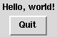mwm with green borders
ex0.pl might look like this:
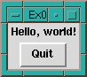tvtwm with red borders it might look like
this:
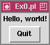Presented here in this section are XWD->GIF files to display the output of very basic perl/Tk scripts of the following form:
#!/usr/bin/perl -w
use strict;
use Tk;
my $top = MainWindow->new();
$top -> Widget() -> pack;
$MainLoop;
Since I do not know of anyone who has set their web-browser
background color to yellow - it was chosen to highlight the widget over the
Toplevel that is a part of MainWindow in a few of the
following images. In them I used:
$top -> Widget(-background => 'yellow') -> pack;
Where Widget may be any one of several widget primitives:
Button,
Radiobutton,
Checkbutton,
Listbox,
Scrollbar,
Entry,
Text,
Canvas,
Frame,
Toplevel,
Scale,
Menu,
Menubutton
#!/usr/bin/perl -w
use strict;
use Tk;
my $top = MainWindow->new();
$top -> Button(-background => 'yellow') -> pack;
$MainLoop;
#!/usr/bin/perl -w
use strict;
use Tk;
my $top = MainWindow->new();
$top -> Radiobutton() -> pack;
$MainLoop;
Note that the default is selected:
#!/usr/bin/perl -w
use strict;
use Tk;
my $top = MainWindow->new();
$top -> Checkbutton(-background => 'yellow') -> pack;
$MainLoop;
Note that the default is unselected:
#!/usr/bin/perl -w
use strict;
use Tk;
my $top = MainWindow->new();
$top -> Listbox() -> pack;
$MainLoop;
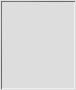
#!/usr/bin/perl -w
use strict;
use Tk;
my $top = MainWindow->new();
$top -> Scrollbar() -> pack;
$MainLoop;
Note that the default is small with a vertical orientation:
#!/usr/bin/perl -w
use strict;
use Tk;
my $top = MainWindow->new();
$top -> Entry() -> pack;
$MainLoop;
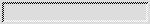
#!/usr/bin/perl -w
use strict;
use Tk;
my $top = MainWindow->new();
$top -> Entry() -> pack;
$MainLoop;
Note that the default size is pretty big:
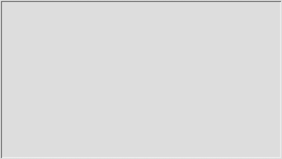
#!/usr/bin/perl -w
use strict;
use Tk;
my $top = MainWindow->new();
$top -> Canvas() -> pack;
$MainLoop;
#!/usr/bin/perl -w
use strict;
use Tk;
my $top = MainWindow->new();
$top -> Frame() -> pack;
$MainLoop;
Note that the Frame is a container widget and unless it has
something to contain or is given non-trivial -height and
-width options it is barely visible at all:
#!/usr/bin/perl -w
use strict;
use Tk;
my $top = MainWindow->new();
$top -> Scale() -> pack;
$MainLoop;
Note that the default is that the scale runs from 0 to 100 from top to bottom
in a vertical orientation:
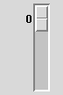
#!/usr/bin/perl -w
use strict;
use Tk;
my $top = MainWindow->new();
$top -> Menubutton() -> pack;
$MainLoop;

Nevertheless, here is how the menubar sample script (in your Tk
build directory) might appear under twm:
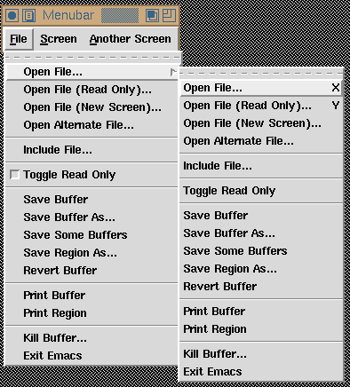
http://fxfx.com/kgr/compound/
(farewell Perl/Tk compound widget page....)
You might also be interested in the Compound widgets in your own Contrib directory. Here are some recent Contrib documents:
http://w4.lns.cornell.edu/~pvhp/ptk/Contrib/
http://fxfx.com/kgr/compound/FileSelector/
Through the generosity of Kevin Greer who maintained that page I have managed
to recover the rather nice picture that he made of the early FileSelector:
#!/usr/bin/perl -w
use strict;
use Tk;
use Tk::Dial;
my $top = MainWindow->new();
$top -> Dial() -> pack;
$MainLoop;
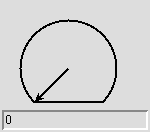<- up to 100 (default).
#!/usr/bin/perl -w
use Tk;
$mw = MainWindow->new();
$f = $mw->Frame( -relief => 'raised', -borderwidth => 2);
$f->pack( -side => 'top', -fill => 'both',
-padx => "0.4c", -pady => "0.4c");
$ff = $f->Frame( -relief => 'raised', -borderwidth => 2);
$ff->pack( -side => 'top', -fill => 'both',
-padx => "0.4c", -pady => "0.4c");
$fff = $ff->Frame( -relief => 'raised', -borderwidth => 2);
$fff->pack( -side => 'top', -fill => 'both',
-padx => "0.4c", -pady => "0.4c");
$fff->Label( -text => 'Raised frames')->pack();
$g = $mw->Frame( -relief => 'sunken', -borderwidth => 2);
$g->pack( -side => 'top', -fill => 'both', -expand => 1,
-padx => "0.4c", -pady => "0.4c");
$gg = $g->Frame( -relief => 'sunken', -borderwidth => 2);
$gg->pack( -side => 'top', -fill => 'both', -expand => 1,
-padx => "0.4c", -pady => "0.4c");
$ggg = $gg->Frame( -relief => 'sunken', -borderwidth => 2);
$ggg->pack( -side => 'top', -fill => 'both', -expand => 1,
-padx => "0.4c", -pady => "0.4c");
$ggg->Label( -text => 'Sunken frames')->pack();
MainLoop();
makes for a rather pretty effect:
#!/usr/bin/perl -w
# from icon.pl
sub icon_mini {
my $w = new MainWindow;
$w->Bitmap('flagup',
-file => "$tk_library/demos/images/flagup",
-maskfile => "$tk_library/demos/images/flagup",
);
$w->Bitmap('flagdown',
-file => "$tk_library/demos/images/flagdown",
-maskfile => "$tk_library/demos/images/flagdown",
);
my $w_frame_b1 = $w->Checkbutton(
-image => 'flagdown',
-selectimage => 'flagup',
-indicatoron => 0,
);
$w_frame_b1->pack();
} # end icon
use Tk;
icon_mini();
MainLoop;
Here it is unselected:
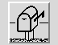
and selected:
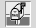
wm iconbitmap @filein Tcl/Tk. Consider it's use in iconwin:
#!/usr/bin/perl -w
BEGIN { unshift(@INC,'blib') }
use Tk;
$top = MainWindow->new();
$top->iconify;
$top->Icon(
'-image' => $top->Pixmap(
'-file' => "Tk/demos/images/ned.xpm")
);
$top->after(3000, [ 'Icon', $top, '-background' => 'green' ]);
$top->iconify;
MainLoop();
The icon generated by this script might appear under
mwm as:
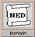twm as:
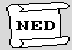tvtwm as:
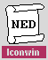As an example consider the Label widget that uses the 'imggif' descriptor in the following:
#!/usr/bin/perl -w
use strict;
use Tk;
my $main = new MainWindow;
$main -> Photo('imggif',
-file => "$Tk::tk_library/demos/images/earthris.gif");
my $c = $main->Label('-image' => 'imggif')->pack;
$main->Button(-text => 'exit',
-command => sub{destroy $main}
)->pack(-anchor => 'e');
MainLoop;
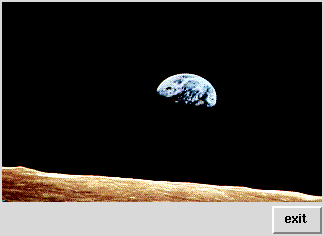
Here our Label widget now uses the $jpgimg descriptor in the following:
#!/usr/bin/perl -w
use strict;
use Tk;
require Tk::JPEG;
my $main = new MainWindow;
my $jpgimg = $main -> Photo('-format' => 'jpeg'.
-file => "testimg.jpg");
my $c = $main->Label('-image' => $jpgimg)->pack;
MainLoop;
(This particular image is in GIF format to reach the widest possible graphic
browser audience):
Hello World! | Widgets | Composites | Tk Bitmaps | Pixmaps | Photos | Tk::JPEG
comp.lang.perl.tk -> perl/Tk FAQ -> Table of Contents -> perl/Tk porting